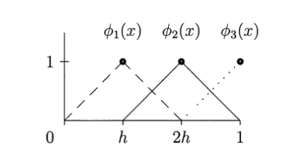

Sonlu Öğeler Metodu (Finite Elements Method)
Bu metot differansiyel, kısmi differansiyel denklemleri (partial differential equations) yaklaşıksal olarak modelleme ve çözmenin yöntemleridir.
Formül: Başlangıç denklemi
$$ \frac{-d}{\mathrm{d} x} \bigg( c(x) \ \frac{\mathrm{d} u}{\mathrm{d} x} \bigg) = f(x) $$
İki tarafı da $v(x)$ ile çarpıyoruz ve 0 to 1 sınırlarıyla entegralini alıyoruz.
$$ \int_0^1 \frac{-d}{\mathrm{d} x} \bigg( c(x) \frac{\mathrm{d} u}{\mathrm{d} x} \bigg) v(x)\mathrm{d} x = \int_0^1 f(x)v(x) \mathrm{d} x $$
Parçalı entegral (integration by parts) formülü şöyledir:
$$ \int y \mathrm{d} z = y z - \int z \mathrm{d} y $$
Ana formülün bölümlerini, parçalı entegrale göre bölüştürürsek:
$$ dz = \frac{-d}{dx} \bigg( c(x) \ \frac{du}{dx} \bigg) dx $$
$$ z = - c(x) \ \frac{du}{dx} $$
$$ y = v(x) $$
$$ dy = \frac{dv}{dx}dx $$
Yukarıda $dz$ içinde $dx$ ve $\frac{1}{dx}$ birbirini iptal eder. Parçalı entegral formülünün sağ tarafına göre yerlerine koyarsak:
$$ \int_0^1 v(x)\mathrm{d} x \frac{-d}{\mathrm{d} x} \bigg( c(x) \frac{\mathrm{d} u}{\mathrm{d} x} \bigg) = - \bigg[ v(x) c(x) \frac{\mathrm{d} u}{\mathrm{d} x} \bigg]_{x=0}^{x=1} \int_0^1 c(x) \frac{\mathrm{d} u}{\mathrm{d} x} \frac{\mathrm{d} v}{\mathrm{d} x} \mathrm{d} x $$
Üstteki parçalı entegral açılımında sol taraf entegrale sınır değerleri aldığında, sağ taraftaki $yz$ sonucunun aynı sınır değerlerine tabi olduğuna dikkat edelim.
Differansiyel denklemde sınır koşulları $x=1$ durumunda $c(1)u'(1)=0$, ve $x=0$ durumunda $v(0)=0$ olarak biliniyor. O zaman üstteki denklemin sol tarafında $x=0$ ve $x=1$ koşulları için tanımlı bölüm $0 - 0 = 0$ olacaktır ve denklemden atılabilir. Geriye kalanlar
$$ \int_0^1 c(x) \frac{\mathrm{d} u}{\mathrm{d} x} \frac{\mathrm{d} v}{\mathrm{d} x} \mathrm{d} x = \int_0^1 f(x)v(x) \mathrm{d} x $$
Bu fonksiyonu Galerkin adlı bir matematikçi bulmuş, "zayıf form (weak form)" olarak adlandırılıyor.
Şimdi diyelim ki n tane test fonksiyonu seçtik $\phi_1(x),..,\phi(n)$ ve bu fonksiyonların $U_j$ sayıları ile çarpımının toplamını, yani bir tür kombinasyonunu $u(x)$ yerine kullanmaya karar verdik.
$$ U(x) = U_1 \phi_1+ ... + U_n\phi_n $$
O zaman
$$ U'(x) = U_1 \phi_1'+ ... + U_n\phi_n' $$
$$ = \sum_1^n U_j \frac{d\phi_j}{dx} $$
Şimdi $du / dx$ yerine $U'(x)$ koyarsak
$$ \int_0^1 c(x) \bigg( \sum_1^n U_j \frac{\mathrm{d}\phi_j}{\mathrm{d} x}\bigg) \frac{\mathrm{d} V_i}{\mathrm{d} x}\mathrm{d} x = \int_0^1 f(x)V_i(x)\mathrm{d} x $$
Dikkat edelim, $v(x)$ yerine $V_i(x)$ kullandık. Üstteki formül her i için yeni bir formül "üretecek". Niye $V_i$? Zayıf formdaki $v(x)$ formülünü de zaten biz uydurmuştuk, yani $v(x)$ biz ne istersek o olur. O zaman bu fonksiyonu n tane formül üretmek için bir numara olarak kullanıyoruz, n tane formül olunca matrisin n x n elemanını doldurabileceğiz ve çözüme erişebileceğiz. Ek not, çoğunlukla $V_i(x)$ için $\phi_i$ sembolü kullanılıyor.
Ayrıca formüldeki $U_j$ kısmını cekip çıkartırsak ve bir vektör içine koyarsak, geri kalanlar bir $K_{ij}$ matrisi içinde tutulabilir.
$$ K_{ij} = \int_0^1 c(x) \frac{\mathrm{d}\phi_j}{\mathrm{d} x} \frac{\mathrm{d} V_i}{\mathrm{d} x} \mathrm{d} x $$
Sağ taraf aynı şekilde i tane formül üretir
$$ F_i = \int_0^1 f(x)V_i(x) \mathrm{d} x $$
Final formül matrix formunda basit bir şekilde temsil edilebilecektir.
$$ KU = F $$
Örnek
Örnek olarak $-u" = 1$ denklemini çözelim. Not: Differansiyel denklemlerde sonuç bulmak demek bir "fonksiyon" bulmak demektir. Normal cebirsel denklemlerde sonuç bulmak değişkenlerin "sayısal" değerini bulmak demektir. Birazdan bulacağımız sonuç $u(x)$ "fonksiyonu" olacak.
Eğer denklem $-u"=1$ ise o zaman bu formülü ana forma uygun hale getirmek için $c(x) = 1$ olarak almamız gerekir. $-u"=1$ denkleminde eşitliğin sağ tarafı 1 olduğuna göre $f(x) = 1$ demektir.
Artık $\phi$ fonksiyonlarını seçme zamanı geldi. Bu fonksiyonların "toplamı" hedeflediğimiz fonksiyonu yaklaşıksal (approximate) olarak temsil edecek. Örnek olarak seçebileceğimiz bir fonksiyon "şapka fonksiyonu (hat function)" olarak bilinen üçgen fonksiyonlar olabilir. Alttaki figürde bu fonksiyonları görüyoruz.

Bu figürde x ekseninin h büyüklüğündeki parçalara bölündüğünü görüyoruz.
Entegralleri hesaplayalım
$$ F_1 = \int_0^1 V_1(x) \mathrm{d} x $$
Daha önce $V_1$ ve $\phi_1$'i aynı kabul ettiğimizi belirtmiştik.
Yukarıdaki entegralin aslında bir alan hesabı yaptığını görüyoruz. Sınırlar $0$ ve $1$ arasında, ama $2h$ ötesinde zaten $\phi_1$ fonksiyonu yok. $\phi_1$'in alanı nedir? Alan üçgenin alanı: Taban çarpı yükseklik bölü 2: $2h$, yüksekliği $1$, o zaman alan $(2h \times 1) / 2 = 1/3$
Benzer mantıkla bakarsak, $F_2$ ile $F_1$ aynı, yani $1/3$. $F_3$ ise onların yarısı, yani $1/6$.
$K_{ij}$ nasıl hesaplanacak? $c(x) = 1$ olduğu için formülden çıkarılabilir ve $V_1$ ve $\phi_1$'in aynı olduğuna söyledik:
$$ K_{ij} = \int_0^1 c(x) \frac{\mathrm{d}\phi_j}{\mathrm{d} x} \frac{\mathrm{d} V_i}{\mathrm{d} x} \mathrm{d} x $$
$$ K_{11} = \int_0^1 \bigg( \frac{\mathrm{d} V_1}{\mathrm{d} x} \bigg) ^2 \mathrm{d} x $$
$dV_1/dx$ nedir? Birinci şapka fonksiyonunun türevidir. Bu türeve bakarsak, $0$ ve $h$ arasında artı eğim (slope) $1/h$, $h$ ve $2h$ arasında eksi eğim $-1/h$ oluyor. Ama kare aldığımız için sonuç aynı, $1/h^2$. O zaman h = 1/3 olduğuna göre $1/(1/3)^2$, yani $dV_1/dx = 9$.
$$ K_{11} = \int_0^{2/3} 9 \mathrm{d} x = 9x \bigg|_0^{2/3} = (9)(2/3) - 0 = 6 $$
$K_{22}$ şeklen aynı fonksiyon parçasını temel aldığı için aynı değere sahip: 6. $K_{33}$ onların yarısı, eşittir 3.
$K_{12}$ farklı eğimlerin çarpımı anlamına gelir, yani $V_1'$ ile $V_2'$ çarpımı olur. Bu iki fonksiyona bakalım, 0 ile h arasında $V_2$ yok, eğim 0. İkisinin de sıfır olmadığı, çarpımda kullanılabilecek bir eğiminin olduğu tek aralık h ve 2h arası. Burada $V_1' = -3, V_2 = 3$.
$$ K_{12} = \int_{1/3}^{2/3} (3)(-3) \mathrm{d} x = -9x \bigg|_{1/3}^{2/3} = -6 - (-3) = -3 $$
Aynı şekilde $K_{23} = -3$. Ama $K_{13} = 0$ çünkü hiç çakışma yok.
Matrisi doldurursak,
$$ KU = F $$
$$
\left[\begin{array}{ccc}
6 & -3 & 0 \\
-3 & 6 & -3 \\
0 & -3 & 3
\end{array}\right]
\left[\begin{array}{c}
U_1 \\
U_2 \\
U_3
\end{array}\right]
=
\left[\begin{array}{c}
1/3 \\
1/3 \\
1/6
\end{array}\right]
$$
Python kodu
K = [[6., -3., 0],
[-3., 6., -3.],
[0., -3., 3.]]
f = [1./3., 1./3., 1./6.]
print np.linalg.solve(K,f)
[ 0.27777778 0.44444444 0.5 ]
print 5./18., 4./9., 1./2.
0.277777777778 0.444444444444 0.5
Rapor edilen değerler bu denklemin bilinen çözümü $u(x) = x - \frac{1}{2}x^2$ ile 0, h, 2h noktalarında (mesh points) birebir uyum gösterdiğini görüyoruz. Yani yaklaşıksal olarak differansiyel denklemi çözmeyi başardık.
Kaynaklar
[1] Strang, G., Computational Science and Engineering